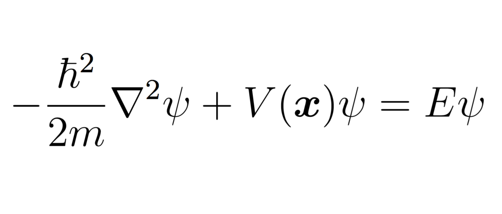
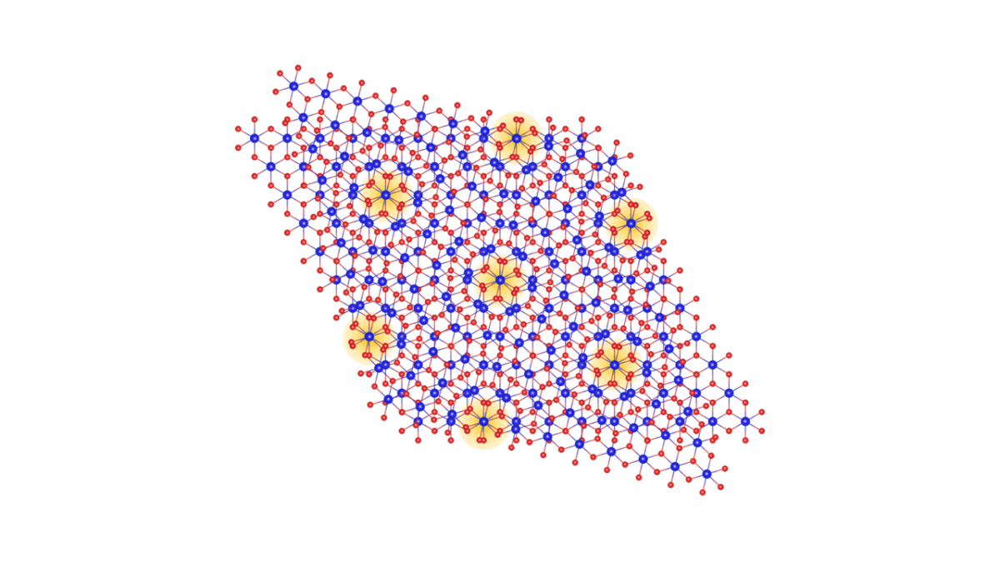

The Schroedinger equation, as outlined on the left is the equation which is
used to govern the way in which wave function works within quantum
materials. This was an important stepping stone within the quantum materials
research field, as this allowed for us to make more accurate predictions about
the properties of quantum materials, therefore allowing us to adapt quantum
materials to help suit our needs in the future.

The Schroedinger equation helped to lay the foundation for the first time that we ever created an atom. In 1989, IBM performed experiments with a scanning tunnelling microscope, where 35 individual xenon atoms were placed on a substrate of chilled nickel. This was a monumental step forward in quantum materials and mechanics as it was in fact the first time that any atom had been placed upon a flat surface. There has since been multiple experiments on lattice structures to help us develop our knowledge up to the present day.
In 1927, this is where it can be argued that there were multiple quantum theories, leading to multiple different possible reasons as to why some materials work in the way that they are described today, as well as prompting multiple experiments to occur throughout this era. This allowed for major scientists at the time to build upon previous centuries of work that helped lay the foundation for quantum materials and mechanics today, such as Glashow, Weinberg and Salam independently proved that weak nuclear force could be merged with quantum electrodynamics to create a single electroweak force, for which they won the 1979 nobel prize in physics.